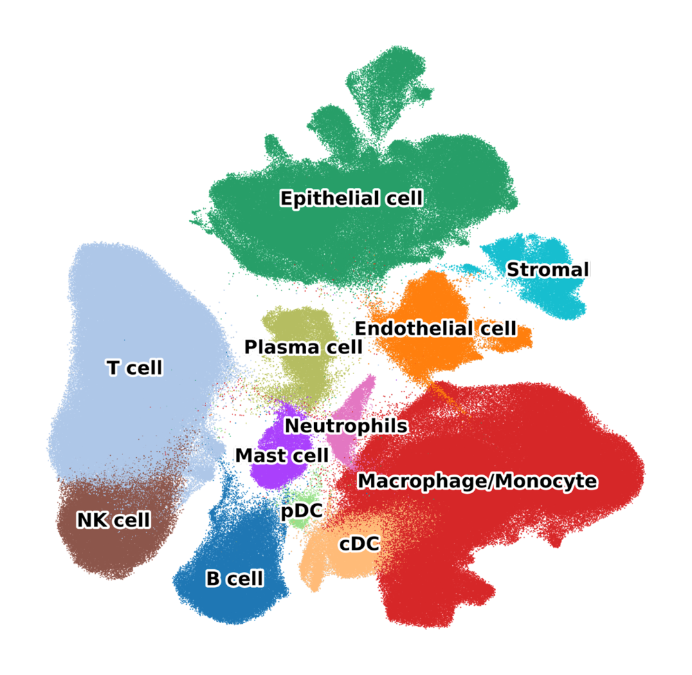

Single-cell Lung Cancer Atlas
High-resolution single-cell atlas reveals diversity and plasticity of tissue-resident neutrophils in non-small cell lung cancer

Cell-x-gene
Browse the atlas interactively in cell-x-gene.
Get data
The following data is available from zenodo:
- Processed input data
- Intermediate results required to reproduce the results
- Core and extended atlas as h5ad files
- Pretrained scArches model to project new data onto the core atlas
Browse code
All code needed to reproduce the study is wrapped into a nextflow workflow and publicy available from GitHub.